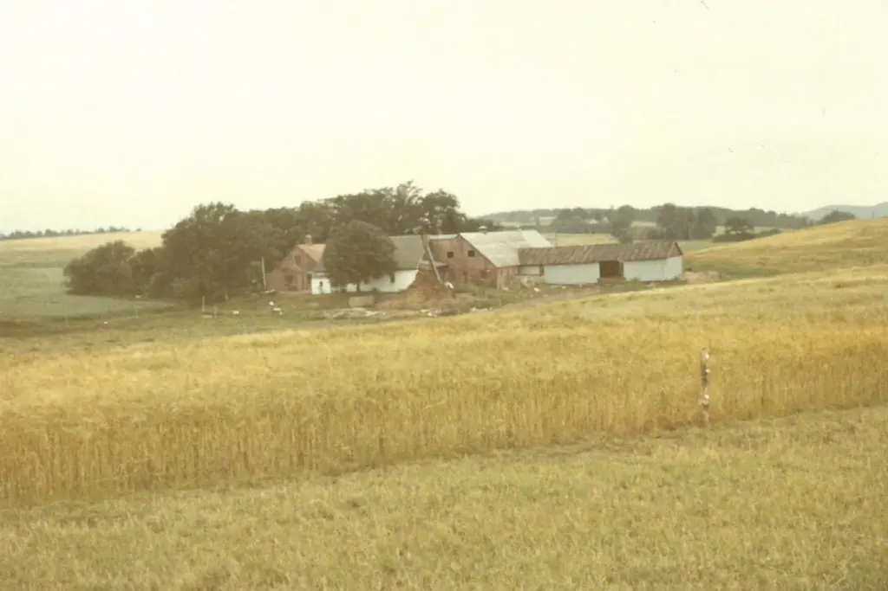

Oprindelse og navnets betydning
Gården blev udstykket fra Lundgaard i Holmstol i 1853. Navnet har udviklet sig gennem flere varianter – oprindeligt "Fielchenkiær", derefter "Folkenkær", før det blev til "Falkenkær" i moderne tid.
Navnet stammer sandsynligvis fra "fielche", et gammelt ord for en hoppe, da lokale landmænd græssede deres hopper her om sommeren.
Historiske træk
En stor sø, nu kaldet Knuds Sø, fungerede oprindeligt som et tørvegravningssted, hvor landsbyboerne hentede brændsel til opvarmning.
Ejerskab og udvikling
Ejendommen fungerede som familiehjem for Svends efterkommere (forbundet med beboerne på Falkenkær 17) fra opførelsen til kommunens overtagelse i 1972. Det oprindelige stuehus blev revet ned kort efter købet.
Bemærkelsesværdigt står et egetræ plantet i 1930'erne stadig som et vartegn. Boligudstykninger begyndte i 1990'erne, og de fleste huse blev bygget omkring årtusindskiftet. Grundejerforeningen blev formelt stiftet i april 2003.
Vigtige årstal
- 1853: Gården udstykkes
- 1930'erne: Egetræet plantes
- 1964-1972: Elna og Svends bopæl
- 1972: Kommunal overtagelse; nedrivning
- 1990'erne-2000: Boligudvikling
- 2003: Foreningens stiftelse